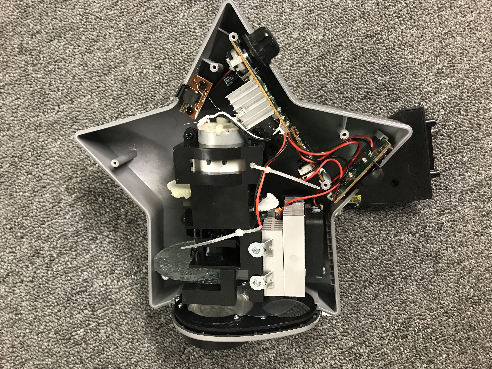

GOAL Disasssemble a star projector to identify machine components Background Video of projector working. There are two switches: one for the laser (stars), and another for the led lights (clouds). DISASSEMBLY  Projector internal Separate pcbs for the power input, star switch, and cloud dial. Heat sink visible here (white). CIRCUITRY Close up of the potentiometer used to adjust the brightness of the clouds. GEAR TRAIN The lenses for both stars and clouds rotate. They are connected to the same motor by the gear trains shown below. The motor is shifted out of the way for better visualization. Seen below, gears within the white motor casing. These increase torque, while decreasing speed, which drives rotation of the lenses.